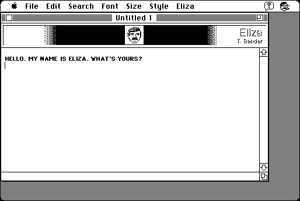

Download
eliza6.0.1.zip (90K) Eliza 6.0.1 repackaged into a zipped hfs disk image and checksum file. The disk image can be mounted with Mini vMac.
eliza6.0.1.sit.hqx (111K) Eliza 6.0.1 in the original format.
copyright: Tom Bender (Trans-Tex Software)
mod date: Nov 21, 2001
license: shareware
official url :
Trans-Tex Software
Game which simulates a psychologist. For "Mac OS 7 thru 9".

If you find these downloads useful, please consider helping the Gryphel Project, which hosts them.
Here are the md5 checksums for the downloads, signed with Gryphel Key 5:
--------- GRY SIGNED TEXT --------- 9168c3fe21a2d2cac8e64814b717fdaf eliza6.0.1.zip c4e45e61c7ce364284237ba23bcdc28f eliza6.0.1.sit.hqx ------- BEGIN GRY SIGNATURE ------- Gry/4Xa8CFcUzxdN/LPBC6d+hzXjtETjfyec74vEJgGPAtwrLzZMP8O6Ua5m7Vg6 qh1NWsgYDfWuS5PNgJDDLbDTg8IOtIHCTrI+JXKNbjrPeGr5Awh4OTqJTwHwkOkJ R4FmDj02LJmPsHXLdxCyee44au5TrZWOEtlo8IaRVYm63T06lC2Wqm+9Jtgk82hr -------- END GRY SIGNATURE --------